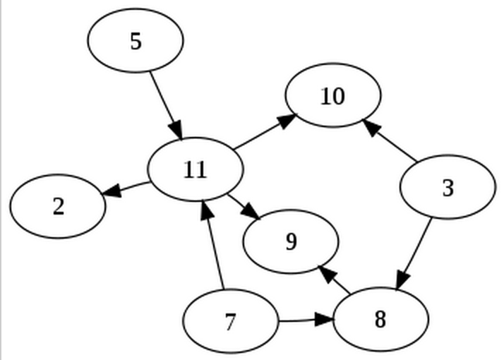

Front End Trends
var username = 'bryanCR89';
console.log(`github.com/${username}`,
`twitter/${username}`);Wait a sec
One step at a time
Obviously start with ES5 :)
Seriously LEARN Javascript
Why?
The language have a lot of quirks and you can hard time trying to figure it out why something doesn't work.


OK What next?
- Learn ES6!
- Babeljs.io
- Use a Framework for build large apps
Why Front-end?
If it's too easy!

Dude, Not even close
Testing on multiple devices / browsers :(
Browser Sync to the rescue
What about performance?

High Performance Browser Networking
Your next favorite shortcut:
⌘ + ⌥ + j
What about setup/deploy a project?
Do you know who is this "little" gentleman?
What about this?

Yeah, yeah Grunt.
....but Gulp rocks!
Frameworks for build large apps

React
A Javascript library for building user interfaces.
- React is the 'V' on MVC
- Use virtual DOM
- Can render on the server (NodeJS)
- One way data binding
- Use JSX => XML-like (optional)
Flux
Application architecture for building user interfaces.
- Unidirectional data flow
- More like a pattern
Flux Structure


A Javascript framework for building web apps.
Angular 1.x
Structure
Easier to test!!
So much magic on large apps
Dirty checking
Angular 2.0.0 (Alpha)
Evolves with ES6 <3
Improve the DI
Use annotations
No more two way data-binding (at least behind the scenes)
Directed acyclic graph
No more watchers
It uses Zone.js
Component communication
In the DOM rather than on scopes
DOM manipulation
Similar to React
ES6 Modules
Directives
- Component Directive - Made up of a view & controller
- Decorator Directive - Similar to the ng-directive.
- Viewport Directive - handles html transformations as in ng-if or ng-repeat.
Which one should I choose?
There is no a right answer for this.
I try all the options and choose the one that I like most.
If you barely remember the first slide